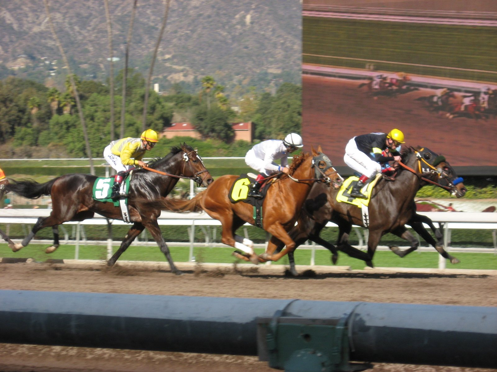

Witiza y Maximum Scepticism, entre los diez que siguen en el Gran Premio de la Hispanidad
Tras el plazo de forfaits, diez caballos siguen inscritos en el Gran Premio de la Hispanidad, la milla Listed que el Hipódromo de la Zarzuela disputa el domingo 11 de octubre. La carrera reparte 59.500 euros, 35.000 de ellos para el ganador.

Tras el plazo de forfaits, diez caballos siguen inscritos en el Gran Premio de la Hispanidad, la milla Listed que el Hipódromo de la Zarzuela disputa el domingo 11 de octubre. La carrera reparte 59.500 euros, 35.000 de ellos para el ganador.
Diez de los veinte inscritos se retiraron, entre ellos Bomberg, Bruno, Frankini, Sommersun, Tacarib Bay y los tres años El Jeque, Mijas y Gelinotte. La declaración de participantes se cerraba este martes a las 10:00.
Entre los que siguen está Witiza, del Río Cubas y preparado por O. Anaya, que en junio ya ganó en Madrid otra milla, el Gran Premio Claudio Carudel. Anaya mantiene también a Kiaro, de Isla de Fuerteventura.
Entre los de tres años destaca Maximum Scepticism, de la cuadra Mediterráneo y preparado por Aleksandre Tsereteli, que el 10 de septiembre ganó el Premio Roberto López por tres cuartos de cuerpo con Jaime Gelabert. Le acompañan en esa generación Centauri, de Javier Maldonado y entrenado por M. Delcher; Imagine, de la cuadra Zul, preparado por C. Buesa, y The Wiser.
La cuadra San José presenta dos bazas, ambas con A. Soto: The Wiser y el cuatro años Skytree. Completan la lista Gold Index, de Yeguada Rocío y preparado por Guillermo Arizkorreta; Konfussion, de Edif, y Vamos Niño, de Caño Quebrado.
Los de tres años cargan 57 kilos y los mayores, 58,5. El Hispanidad cierra un programa de seis carreras en el que también se corre el Premio Subasta ACPSIE 2025, de categoría B sobre 1.400 metros.
Fichas: Sommersun (Fr) (caballo) · Witiza (caballo) · A.Tsereteli (preparador) · C.Buesa (preparador) · G.Arizkorreta (preparador) · O.Anaya (preparador)
— Redacción de Galope al Día